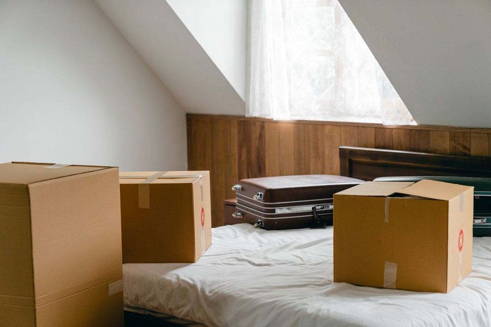

Clearing a grown kid's old bedroom goes best in three steps. Ask them what they want and give a firm date to claim it, wipe and recycle the old phones, laptops and consoles, and shred anything with their personal details. After that, a crew can carry out the bed, the desk, the dorm leftovers and the boxes in one visit.
The kid has their own place now. Maybe it is an apartment across town, a job in another state, or a house of their own. Their old room is still exactly how they left it: the twin bed, the desk they did homework at, a shelf of trophies, a closet of clothes they will never wear again, and a stack of boxes that came home from the dorm and never got unpacked.
Start with a conversation, not a trash bag
The fastest way to stall this job is to start sorting without them. The second fastest is to wait for them to come do it.
Call them, tell them what the room is going to become, and give them a date. Two or three weeks is usually enough. Anything they want gets boxed and labeled with their name, and they either pick it up, have it shipped, or you agree it sits in one marked bin in the garage. Anything they do not claim by the date is yours to decide on.
Grown kids often want less than their parents expect. A few photos, a yearbook, the jersey, maybe one stuffed animal. Asking them first means nobody is surprised later, and it lets you clear the rest without second-guessing every box.
If this room is changing because the household is getting smaller overall, our guide to downsizing a parent into assisted living covers the larger version of the same sort.
Old phones, laptops and game consoles
Nearly every kid's room has a drawer of retired electronics: two or three old phones, a laptop with a dead hinge, a game console, a tablet with a cracked screen. These hold photos, messages and logins, so they need a few minutes of prep before they go anywhere.
The FTC's guide on removing your personal information before you get rid of a phone lays out the steps: back up anything worth keeping, take out the SIM card and any memory card, and restore the device to factory settings. Let the kid do this part for their own devices, since they know the passwords.
Once a device is wiped, the EPA's page on electronics donation and recycling recommends passing working pieces on and sending the rest to a certified recycler. Old monitors, speakers, printers and the tangle of chargers can go on our truck with the furniture.
Look through every desk drawer and binder before it goes. School papers, old tax forms from a first job, bank letters and anything with a Social Security number end up tucked into desks and binders. Pull those out and shred them rather than letting them leave in a box.
The dorm leftovers
College sends a second wave of things home. A mini fridge, a microwave, a futon, a rug, a desk lamp, plastic drawer towers, and the parts of a lofted bed frame. Most of it was bought cheap and used hard.
A mini fridge has refrigerant inside, so it should not go out to the curb with the regular trash. On our truck it goes through a disposal path built for appliances like it. Our guide to appliance and electronics disposal in North Texas explains how that works, and the same goes for a dorm mini fridge or microwave picked up in Dallas or anywhere else we work.
The futon and rug often have more life left than they look. Clean, sturdy pieces may suit a donation center like a Habitat for Humanity ReStore, which takes furniture and household goods in good condition, though every location sets its own rules. Our guide to donating furniture in DFW covers how centers tend to decide.
What we haul from a grown kid's room
On a typical pickup like this, we take:
- twin and full beds, frames, headboards and box springs
- mattresses, including the one that came home from the dorm
- desks, desk chairs and gaming chairs
- dressers, nightstands and bookshelves
- old TVs, monitors, speakers and wiped electronics
- dorm leftovers: mini fridges, microwaves, futons, rugs and drawer towers
- bags of outgrown clothes, shoes, bedding and stuffed animals
The mattress often needs its own plan, and our guide to mattress disposal in DFW covers your options. The closet is usually the slowest part of the room, so our closet cleanout guide walks through clothes and soft goods. Shelves of textbooks and binders are covered in our post on boxes of books, bookcases and old paperwork.
If the room is turning into a guest room before company arrives, our post on clearing the spare room before the holidays picks up from here. We handle these pickups across the area, whether it is a bedroom set coming down the stairs in The Colony or a whole kid's room cleared out in Dallas.
Where it goes after we load it: usable items go to local donation partners, metal goes to recyclers, and our stated goal is to keep more than half of every load out of the landfill.
How the pickup runs
Send us a photo of the room and anything else that is going. Tell us if the room is upstairs or if the bed frame needs to come apart, so the crew comes ready.
A crew looks at what you have and gives you a firm number before anything is loaded. The quote is the bill, and disposal is included. We are affordable and priced fair, based on how much there is to take. You point, we carry, we sweep. These are our own crews, not gig labor.
Call before noon and same afternoon is typical across the northern suburbs. When the room is sorted, tell us what needs to go, or read more about how our furniture removal works for the bigger pieces.
Frequently asked questions
Should I clear my grown kid's room without asking them?
It is better to ask first and give a firm date to claim what they want. Most grown kids keep only a few things, and asking avoids hard feelings later.
Do you take a mini fridge from a dorm?
Yes. A mini fridge has refrigerant, so it goes through an appliance disposal path rather than to the curb, and that is included in your quote.
What should I do with old phones and laptops first?
Back up anything worth keeping, remove the SIM and memory cards, and restore factory settings. After that they can be recycled or go on our truck.
Will you carry furniture down from an upstairs bedroom?
Yes. Tell us when you send the photo so the crew plans the route out and protects the stairs and doorframes.
Can the bed and desk be donated?
Sometimes, if they are sturdy and clean. Usable furniture goes to local donation partners when it can, and the rest is disposed of responsibly.
Agree on what goes, set the date, and let the crew do the carrying. The room can be something new by the weekend after.